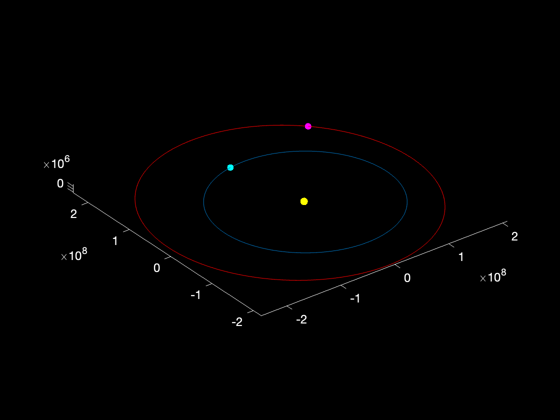
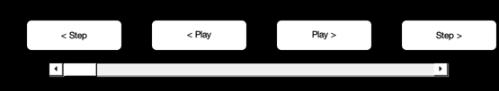

Animate the phasing of Earth and Mars over time.
Uses PlanetPosJPL. Creates a nice animation using PlaybackControls.
-------------------------------------------------------------------------
Contents
%-------------------------------------------------------------------------- % Copyright (c) 2013 Princeton Satellite Systems, Inc. % All rights reserved. %-------------------------------------------------------------------------- % Since version 2014.1 %--------------------------------------------------------------------------
Initialization
%---------------- jD0 = Date2JD([2004 1 1 0 0 0]); %au = Constant('au'); %muSun = Constant('mu sun'); marsYear = 687; % Mars year (days) days = 0 : .25 : 2*marsYear; nT = length(days); rE = zeros(3,nT); rM = zeros(3,nT); vE = zeros(3,nT); vM = zeros(3,nT); PlanetPosJPL('initialize',[3 4]);
Generate the orbits
%--------------------- for j=1:nT jD = jD0 + days(j); [r,t,v] = PlanetPosJPL( 'update', jD, 1 ); rE(:,j) = r(:,1); vE(:,j) = v(:,1); rM(:,j) = r(:,2); vM(:,j) = v(:,2); end
Plot
%------ NewFig('Earth and Mars Orbits'); set(gcf,'position',[882 686 560 420]); plot3(rE(1,:),rE(2,:),rE(3,:)) hold on plot3(rM(1,:),rM(2,:),rM(3,:),'r') plot3(0,0,0,'y.','markersize',20) set(gca,'color','k','xcolor','w','ycolor','w','zcolor','w') set(gcf,'color','k') axis equal earth = plot3(rE(1,1),rE(2,1),rE(3,1),'c.','markersize',18); mars = plot3(rM(1,1),rM(2,1),rM(3,1),'m.','markersize',18); cb{1} = @(x) set(earth,'xdata',rE(1,round(x)),'ydata',rE(2,round(x)),'zdata',rE(3,round(x))); cb{2} = @(x) set(mars, 'xdata',rM(1,round(x)),'ydata',rM(2,round(x)),'zdata',rM(3,round(x))); PlaybackControls(1,nT,1,cb,1,'Earth / Mars Time Control',[886 561 555 102]); %-------------------------------------- % $Id: 561d86e73ff002559b17173fa6c55ac4f4815748 $ 